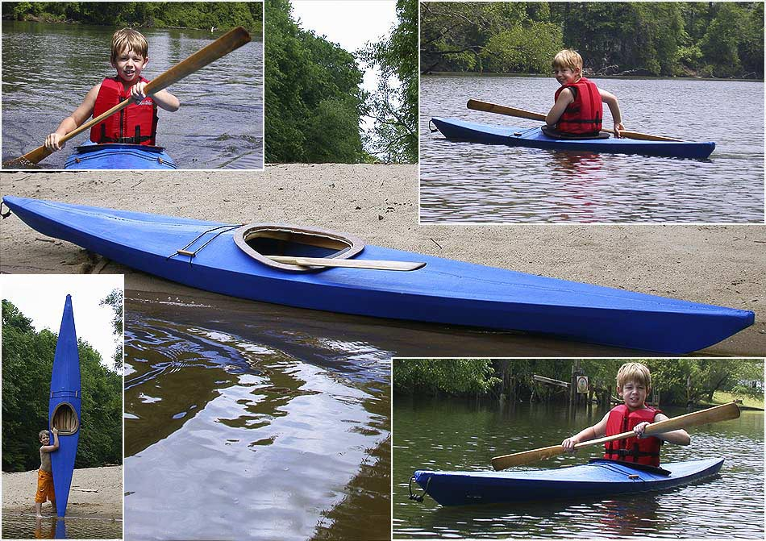

| (New) Sea Flea by Thomas Duncan (US) | Menu Previous Page Next Page |
|
 Jason Duncan, age 8, of Greenville, North Carolina paddles his recently completed Sea Flea ( 12ft X 19in). The gunwales, chine, and keel are douglas fir, oak floor boards, 1/2" ply form/stations, ply coaming base with 1/4 luan coaming lip and 1 layer of 4oz glass, stitched right to skin. The skin is 8 oz cotton canvas tarp, sewn with unwaxed dental floss, and painted with multiple coats of exterior latex. Weight is about 20 lbs. |
|